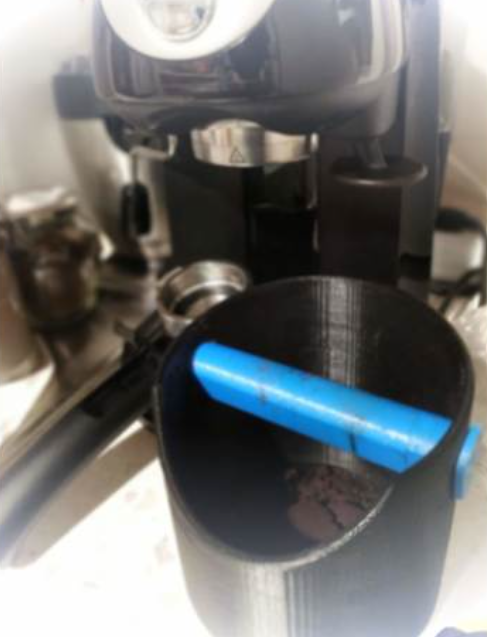
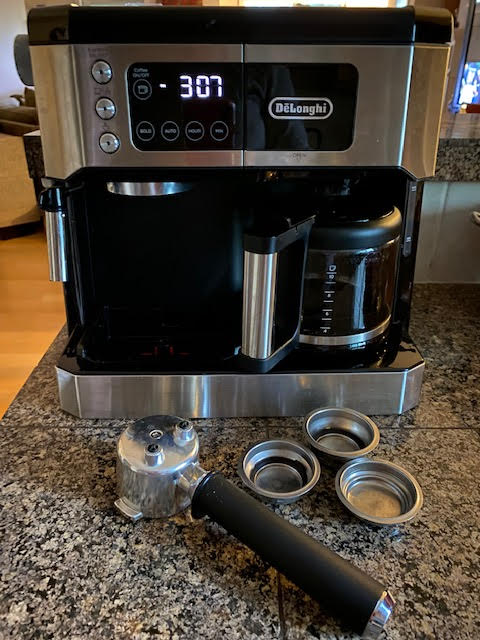
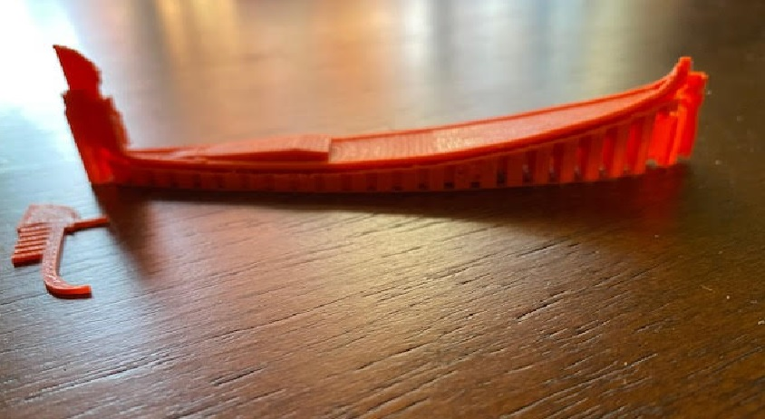

Final Project Proposal: An Espresso Knock Box

Concept:
Being an amateur barista and all-around coffee connoisseur, last year I bought myself this De'Longhi combination coffee and espresso maker for my birthday - all the caffeine I ever wanted!

Use case:
Thinking about my final project, I thought it would be exciting to use digital fabrication techniques to make a new kitchen tool that I could incorporate into my daily coffee routine, something practical that would make the art of coffeemaking even more enjoyable, efficient, and as a stretch goal, maybe more environmentally friendly! I thought perhaps I could create an espresso knock box to sit on kitchen counter next to my espresso maker - this way I could more easily remove the espresso grounds from the portafilter, saving me from knocking my coffee grounds into the garbage can (so wasteful!) Moreover, by collecting my coffee grounds in a knock box, I could start a new "tiny habit" of composting them and using the compost to enrich my garden soil. In addition, coffee grounds can be an effective, environmentally-friendly fertiizer for certain plants and flowers, and they can serve as a helpful natural pesticide to mitigate garden slugs and snails!
To fuel my imagination, I searched Thingiverse to look for coffee-related kitchen tools that others have successfully made and reviewed. I found this 3D printable knock box as a great departure point for kicking off the project:

As a next step, I made an Americano and took a seat at my ktichen bar to do some sketching. I wanted to document a few different ideas for how I could design the parts of the knock box so that I could have some flexibility and design options to pivot in a different direction in the event that I run into any scheduling conflicts and/or cannot secure the desired materials I'm hoping to use for fabrication:
After that,
To have a physical model of the knock box, I plan to I 3D printed these STL files that I found online. I scaled the gondola down by 90% just to have a model that I could hold in one hand for reference, and I scaled down the iron prow as well so that I could get a sense for how I might need to modify the object in order to use it effectively to create a 3D printed mold:

Gondola body STL file
Gondola iron prow STL file
Resources:
Composting with Coffee Grounds
Treatstock: About Thermoplastic Polyurethane (TPU)